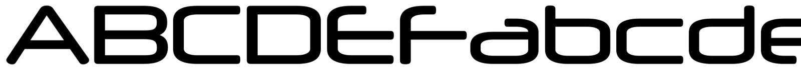

References / Typeface / 273
Neuropol typeface
Ray Larabie’s wide, rounded-square techno face, first given away as freeware in 1996 and widely used in the years around 2000.
- Source
- Typodermic Fonts: Public domain fonts, Neuropol
- Creator
- Ray Larabie
- Made
- 1996 (Typodermic gives 27 October 1996)
- Style
- Y2K aesthetic (agent-proposed, not yet reviewed by a person)
- Moods
- Futuristic, techno, sleek
- Evidence
- Inspected Typodermic’s specimen image for Neuropol (1800 × 160) from its public-domain page, and the specimen for its chrome variant Neurochrome (1352 × 120).
- Reviewed
- Rights
- Open license, stored. License: CC0-1.0. Rights policy
Context
Typodermic dates Neuropol to 1996 and says the design was influenced by Brendel Type Studio’s Digital Sans (1974). Its sister face Neurochrome (1997) was Neuropol “rendered in Lightwave, a 3D modeling program, applying extrusion, beveling, and reflections to make it look like chrome”. Typodermic: Public domain fonts.
Fonts In Use calls Neuropol “a wide, starkly futuristic typeface” based on rounded squares, like the earlier techno fonts Microgramma, Digital, and Chimes; it was redrawn as Neuropol X in 2004. Fonts In Use: Neuropol.
Larabie released his Larabie Fonts freeware from 1996. A modified Neuropol was used in the wordmark of the 2006 Winter Olympics in Turin. Wikipedia: Ray Larabie.
Observed
- The letters are very wide and low. Round letters such as C, D, and O are built from rounded rectangles with straight sides.
- Stroke ends are cut flat; the horizontal strokes of E and F stop short of the stem ends and look like separate bars.
- The A is a pointed triangle without a crossbar at the apex, and the lowercase a, b, c, d, and e repeat the rounded-rectangle bowl.
- Strokes have one even weight, and spacing is generous.
- In the Neurochrome specimen the same forms are extruded and bevelled, with black-and-white reflections that read as chrome.
Why it belongs
Neuropol is the Y2K techno heading face in its free, amateur-web form. Its spread through freeware explains why the wide rounded-square look was everywhere around 2000, on game menus, club flyers, and personal websites.
Neurochrome shows the typical Y2K move of turning a flat face into a 3D chrome render.
Borrow
Set short headings in a wide rounded-square face, uppercase, with extra letter spacing.
For a hero word, add a chrome treatment: a vertical silver gradient with a hard highlight line near the middle.
Measured
Machine-extracted by tools/image-traits.py on . Full measurement.
- Mean chroma
- 0
- Palette
- #ffffff 60%
- #000000 24%
- #e7e7e7 3%
- #959595 3%
- #2f2f2f 2%
- #464646 2%
- #171717 2%
- #b3b3b3 1%

